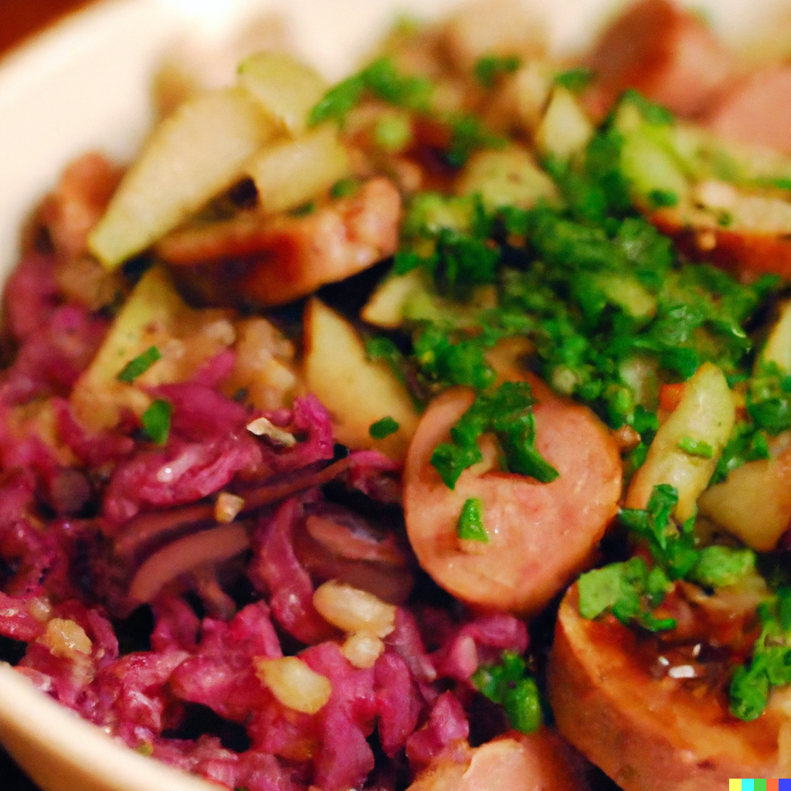

Bavarian Bliss Vegan Bowl

Description
A hearty and savory rice bowl that draws inspiration from the classic
flavors of Germany. The base is made with nutritious brown rice, topped
with sautéed vegan sausages, tangy sauerkraut, and tender red cabbage.
It's all brought together with a splash of apple cider vinegar for a bit
of tartness. Garnished with fresh dill and parsley, this bowl provides a
satisfying and nourishing meal that's packed with flavor.
Ingredients
- 1 cup of brown rice
- 2 cups of vegan sausages, sliced
- 1 cup of sauerkraut
- 1 cup of shredded red cabbage
- 1 large red onion, thinly sliced
- 2 cloves of garlic, minced
- 2 tablespoons of apple cider vinegar
- 2 tablespoons of olive oil
- Salt and pepper to taste
- Fresh dill and parsley for garnish
Steps
- Cook the brown rice according to the instructions on the package.
-
In a large pan, heat the olive oil over medium heat. Add the sliced
vegan sausages and cook until they're browned on all sides. Remove and
set aside.
-
In the same pan, add the sliced onion and minced garlic. Cook until
they're soft and fragrant.
-
Add the shredded red cabbage and sauerkraut to the pan, stirring to
combine. Cook for another 5-7 minutes, until the cabbage is soft.
-
Add the apple cider vinegar, salt, and pepper. Stir to combine, and cook
for another 2-3 minutes.
-
Divide the cooked rice into bowls, top with the cabbage and sausage
mixture, garnish with fresh dill and parsley, and serve.